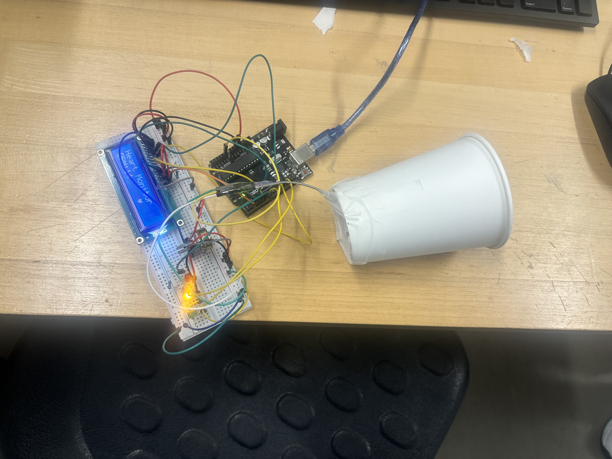

Circuit Diagram
The KY-039 sensor will measure the pulse coming from the fingertip of a user and will display the heart rate on a LCD display in the form of Beats Per Minute. The completed diagram is a combination of both diagrams.


Course: TECH 117 (Computer Engineering Technology, Fall 2025)
Instructor: Ph.D. Ana Rodrigues
Team Members:
This project uses an Arduino Uno, a KY-039 pulse sensor, an LCD display, Red and Green LEDS and a potentiometer, to detect and display heart rate in real-time. The system processes the heart's electrical signals via the pulse sensor and displays them on the LCD display for easy monitoring. A cover is used over the KY-039 Sensor to help limit interference from outside light, as it is light sensitive.
The KY-039 sensor will measure the pulse coming from the fingertip of a user and will display the heart rate on a LCD display in the form of Beats Per Minute. The completed diagram is a combination of both diagrams.
| Item | Qty | Unit Price (CAD) | Subtotal (CAD) | Source |
|---|---|---|---|---|
| Arduino Uno Rev3 | 1 | $21.99 | $21.99 | Arduino Store |
| KY-039 Pulse Sensor (Pack of 3) | 1 | $2.99 | $8.99 | Amazon |
| 16x2 LCD Arduino Display | 1 | $10.36 | $10.36 | Amazon |
| LEDs (Red, Yellow, Green) | 3 | $0.05 | $0.15 | DigiKey |
| 220 Ω Resistors | 3 | $0.03 | $0.09 | Adafruit |
| Breadboard | 1 | $5.00 | $5.00 | Amazon |
| Jumper Wires | 1 set | $3.50 | $3.50 | SparkFun |
| USB Cable | 1 | $3.50 | $3.50 | SparkFun |
| Potentiometer | 1 | $1.66 | $9.98 | Amazon |
| Estimated Total | $63.56 | — | ||
The following image shows the assembled prototype on a breadboard.
The following image shows the KY-039 pulse sensor with a cover to linit the amount of light that goes on the sensor.

The following Arduino code detects the pulse from a fingertip, converts it to BPM, and prints it on to the Serial Monitor and the LCD Display
#define samp_siz 4
#define rise_threshold 4
#include
const int rs = 12, en = 11, d4 = 5, d5 = 4, d6 = 3, d7 = 2;
LiquidCrystal lcd(rs, en, d4, d5, d6, d7);
int sensorPin = A0;
const int redLED = 6;
const int yellowLED = 7;
const int greenLED = 13;
byte heart[] = {
B00000,
B00000,
B11011,
B11111,
B11111,
B01110,
B00100,
B00000
};
void setup() {
lcd.begin(16, 2);
// Turn on the display
lcd.display();
// Load custom character into memory slot 0
lcd.createChar(0, heart);
Serial.begin(9600);
lcd.print("Heart Monitor");
pinMode(redLED, OUTPUT);
pinMode(yellowLED, OUTPUT);
pinMode(greenLED, OUTPUT);
}
void loop() {
float reads[samp_siz];
float sum = 0;
long int now, ptr = 0;
float last = 0, reader = 0, start = 0;
float first = 0, second = 0, third = 0;
float before = 0;
float print_value = 0;
bool rising = false;
int rise_count = 0;
long int last_beat = millis(); // initialize properly
// Initialize array
for (int i = 0; i < samp_siz; i++)
reads[i] = 0;
while (1) {
// Average over ~20ms to remove 50Hz noise
int n = 0;
reader = 0;
start = millis();
do {
reader += analogRead(sensorPin);
n++;
now = millis();
} while (now < start + 20);
reader /= n;
//Serial.print("reader = ");
//Serial.println(reader);
// Rolling average buffer
sum -= reads[ptr];
sum += reader;
reads[ptr] = reader;
last = sum / samp_siz;
// Detect rising edge (heartbeat)
if (last > before) {
rise_count++;
if (!rising && rise_count > rise_threshold) {
rising = true;
first = millis() - last_beat;
last_beat = millis();
// Avoid divide-by-zero
if (first < 1) first = 1;
// Weighted BPM average
print_value = 60000.0 /
(0.4 * first + 0.3 * second + 0.3 * third);
int bpm = round(print_value);
if (bpm > 100) {
digitalWrite(redLED, HIGH);
digitalWrite(yellowLED, LOW);
digitalWrite(greenLED, LOW);
}
else if (bpm<= 100 && bpm >= 70) {
digitalWrite(redLED, LOW);
digitalWrite(yellowLED, LOW);
digitalWrite(greenLED, HIGH);
}
else {
digitalWrite(redLED, LOW);
digitalWrite(yellowLED, HIGH);
digitalWrite(greenLED, LOW);
}
lcd.clear();
lcd.print("Heart Monitor");
lcd.setCursor(0, 1);
lcd.print("BPM:");
lcd.print(bpm);
lcd.setCursor(10,1);
lcd.print(byte(0));
delay(100);
lcd.setCursor(10,1);
lcd.print(' ');
lcd.write(byte(0));
delay(100);
Serial.print(" Print Value: ");
Serial.println(print_value);
Serial.print(" BPM : ");
Serial.println(bpm);
// Shift beat memory
third = second;
second = first;
}
} else {
// Falling edge
rising = false;
rise_count = 0;
}
before = last;
// Move circular buffer pointer
ptr = (ptr + 1) % samp_siz;
}
}
The system is able to detect a pulse of a fingertip and display the BPM on to the LCD display. The pulse is able to be detected by the KY-039 sensor. The Red LED lights up if BPM is over 100 BPM, the green LED lights if if between 70-100 BPM and the yellow LED lights up if under 70 BPM.
The following external resources and example projects demonstrate related Arduino applications using ultrasonic distance sensors, passive buzzers, and multicolour LEDs: